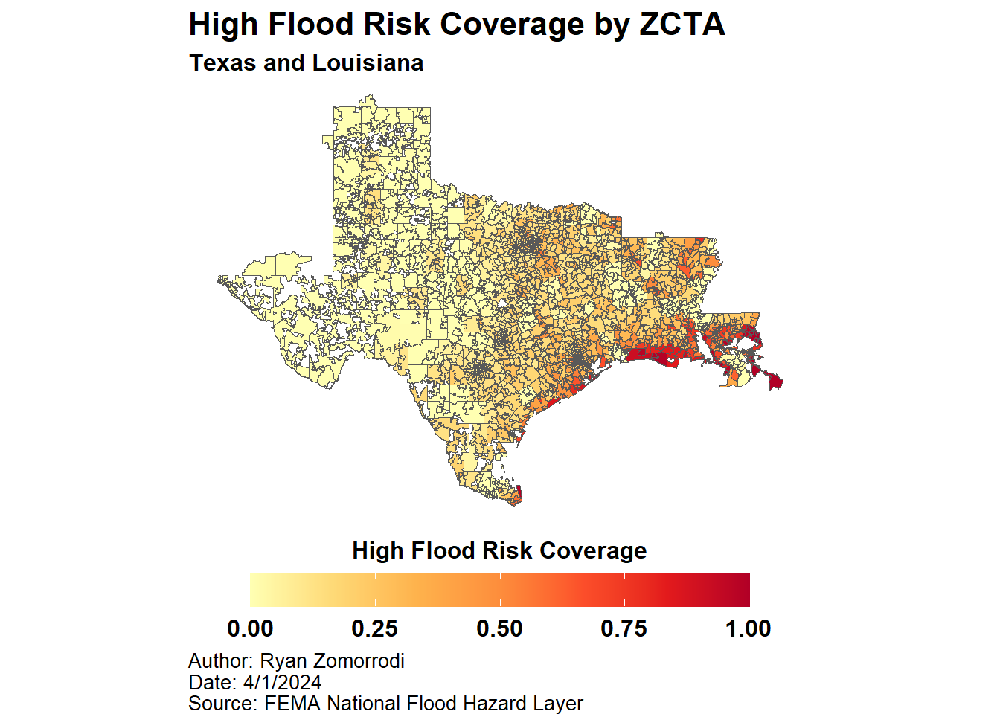

library(httr2)
library(tidyverse)
options(timeout = 20 * 60)
temp_dir <- tempdir()
temp_file <- tempfile()
request("https://msc.fema.gov/portal/downloadProduct") %>%
req_url_query(productTypeID = "NFHL", productSubTypeID = "NFHL_STATE_DATA", productID = "NFHL_22_20231221") %>%
pluck("url") %>%
download.file(temp_file, mode = "wb")
unzip(temp_file, exdir = temp_dir)
temp_file <- tempfile()
request("https://msc.fema.gov/portal/downloadProduct") %>%
req_url_query(productTypeID = "NFHL", productSubTypeID = "NFHL_STATE_DATA", productID = "NFHL_48_20240314") %>%
pluck("url") %>%
download.file(temp_file, mode = "wb")
unzip(temp_file, exdir = temp_dir)1 Flood
1.1 Data Procurement
- FEMA National Flood Hazard Layer was downloaded from the FEMA Flood Map Service Center.
- ZCTA to County Crosswalk was downloaded from https://www2.census.gov/geo/docs/maps-data/data/rel/zcta_county_rel_10.txt
- ZCTA shapefiles were downloaded for the entire US using the
tigrispackage
1.2 Data Processing
- FEMA National Flood Hazard Layers were downloaded for the state of Texas and Louisiana
- Separately, 2017 ZCTAs downloaded from the US Census Cartographic Boundary Files
- Then, the ZCTAs were joined to the US Census ZCTA to County Crosswalk in order to identify Texas and Louisiana ZCTAs
- The ZCTAs were filtered to Texas and Louisiana
- A geodatabase was created
- The ZCTAs were written to the geodatabase
- FEMA National Flood Hazard Layers were merged and written to geodatabase
- FEMA National Flood Hazard Layers were cast to rasters
- The FEMA Flood Hazard areal coverage for each ZCTA was calculated using Tabulate Area (m^2)
- Total ZCTA area was calculated (m^2)
- Percent ZCTA Flood Hazard areal coverage was calculated
1.3 Output
TXLA_ZCTA_FEMA_HAZ.parquet- GEOID - ZCTA GEOID
- Area - Total ZCTA Area
- A to X - Areal coverage (m^2) for each FEMA flood designation
- Pct[A to X] - Percent covered for each FEMA flood designation
- PctNoFEMACover - Percent not covered by any FEMA flood designation
- PctHighRisk - Percent covered by FEMA flood designations beginning by A or V
- PctLowMediumRisk - Percent covered by FEMA flood designations beginning by B, X, C
More information about the FEMA flood designations, see this helpful documentation published by Shawnee County
1.4 Code
Downloaded FEMA National Flood Hazard Layers
Downloaded ZCTAs for TX and LA and wrote to a geodatabase
library(sf)
library(tigris)
ZCTAs <- read_csv("https://www2.census.gov/geo/docs/maps-data/data/rel/zcta_county_rel_10.txt") %>%
filter(STATE %in% c(48, 22)) %>%
distinct(ZCTA5) %>%
rename(GEOID = ZCTA5)
ZCTAs_sf <- ZCTAs %>%
left_join(zctas(cb = FALSE, year = 2017), by = join_by(GEOID == GEOID10)) %>%
st_as_sf() %>%
select(-c(ZCTA5CE10, CLASSFP10, MTFCC10, FUNCSTAT10, ALAND10, AWATER10, INTPTLAT10, INTPTLON10))
ZCTAs_sf %>%
st_write(str_c(temp_dir, "/NFHL_TXLA.gdb"), "ZCTAs")Started r to Python bridge
reticulate::use_python("C:/Program Files/ArcGIS/Pro/bin/Python/envs/arcgispro-py3/python.exe")Merged FEMA National Flood Hazard Layers for TX and LA
with arcpy.EnvManager(outputCoordinateSystem='PROJCS["USA_Contiguous_Albers_Equal_Area_Conic",GEOGCS["GCS_North_American_1983",DATUM["D_North_American_1983",SPHEROID["GRS_1980",6378137.0,298.257222101]],PRIMEM["Greenwich",0.0],UNIT["Degree",0.0174532925199433]],PROJECTION["Albers"],PARAMETER["False_Easting",0.0],PARAMETER["False_Northing",0.0],PARAMETER["Central_Meridian",-96.0],PARAMETER["Standard_Parallel_1",29.5],PARAMETER["Standard_Parallel_2",45.5],PARAMETER["Latitude_Of_Origin",37.5],UNIT["Meter",1.0]]'):
arcpy.management.Merge(
inputs= r.temp_dir + r"\NFHL_22_20231221.gdb\S_FLD_HAZ_AR;" + r.temp_dir + r"\NFHL_48_20240314.gdb\S_FLD_HAZ_AR",
output= r.temp_dir + r"\NFHL_TXLA.gdb\S_FLD_HAZ_AR",
field_mappings=r'DFIRM_ID "DFIRM_ID" true true false 6 Text 0 0,First,#,' + r.temp_dir + r'\NFHL_22_20231221.gdb\S_FLD_HAZ_AR,DFIRM_ID,0,5,' + r.temp_dir + r'\NFHL_48_20240314.gdb\S_FLD_HAZ_AR,DFIRM_ID,0,5;VERSION_ID "VERSION_ID" true true false 11 Text 0 0,First,#,' + r.temp_dir + r'\NFHL_22_20231221.gdb\S_FLD_HAZ_AR,VERSION_ID,0,10,' + r.temp_dir + r'\NFHL_48_20240314.gdb\S_FLD_HAZ_AR,VERSION_ID,0,10;FLD_AR_ID "FLD_AR_ID" true true false 32 Text 0 0,First,#,' + r.temp_dir + r'\NFHL_22_20231221.gdb\S_FLD_HAZ_AR,FLD_AR_ID,0,31,' + r.temp_dir + r'\NFHL_48_20240314.gdb\S_FLD_HAZ_AR,FLD_AR_ID,0,31;STUDY_TYP "STUDY_TYP" true true false 38 Text 0 0,First,#,' + r.temp_dir + r'\NFHL_22_20231221.gdb\S_FLD_HAZ_AR,STUDY_TYP,0,37,' + r.temp_dir + r'\NFHL_48_20240314.gdb\S_FLD_HAZ_AR,STUDY_TYP,0,37;FLD_ZONE "FLD_ZONE" true true false 17 Text 0 0,First,#,' + r.temp_dir + r'\NFHL_22_20231221.gdb\S_FLD_HAZ_AR,FLD_ZONE,0,16,' + r.temp_dir + r'\NFHL_48_20240314.gdb\S_FLD_HAZ_AR,FLD_ZONE,0,16;ZONE_SUBTY "ZONE_SUBTY" true true false 76 Text 0 0,First,#,' + r.temp_dir + r'\NFHL_22_20231221.gdb\S_FLD_HAZ_AR,ZONE_SUBTY,0,75,' + r.temp_dir + r'\NFHL_48_20240314.gdb\S_FLD_HAZ_AR,ZONE_SUBTY,0,75;SFHA_TF "SFHA_TF" true true false 1 Text 0 0,First,#,' + r.temp_dir + r'\NFHL_22_20231221.gdb\S_FLD_HAZ_AR,SFHA_TF,0,254,' + r.temp_dir + r'\NFHL_48_20240314.gdb\S_FLD_HAZ_AR,SFHA_TF,0,254;STATIC_BFE "STATIC_BFE" true true false 8 Double 0 0,First,#,' + r.temp_dir + r'\NFHL_22_20231221.gdb\S_FLD_HAZ_AR,STATIC_BFE,-1,-1,' + r.temp_dir + r'\NFHL_48_20240314.gdb\S_FLD_HAZ_AR,STATIC_BFE,-1,-1;V_DATUM "V_DATUM" true true false 17 Text 0 0,First,#,' + r.temp_dir + r'\NFHL_22_20231221.gdb\S_FLD_HAZ_AR,V_DATUM,0,16,' + r.temp_dir + r'\NFHL_48_20240314.gdb\S_FLD_HAZ_AR,V_DATUM,0,16;DEPTH "DEPTH" true true false 8 Double 0 0,First,#,' + r.temp_dir + r'\NFHL_22_20231221.gdb\S_FLD_HAZ_AR,DEPTH,-1,-1,' + r.temp_dir + r'\NFHL_48_20240314.gdb\S_FLD_HAZ_AR,DEPTH,-1,-1;LEN_UNIT "LEN_UNIT" true true false 16 Text 0 0,First,#,' + r.temp_dir + r'\NFHL_22_20231221.gdb\S_FLD_HAZ_AR,LEN_UNIT,0,15,' + r.temp_dir + r'\NFHL_48_20240314.gdb\S_FLD_HAZ_AR,LEN_UNIT,0,15;VELOCITY "VELOCITY" true true false 8 Double 0 0,First,#,' + r.temp_dir + r'\NFHL_22_20231221.gdb\S_FLD_HAZ_AR,VELOCITY,-1,-1,' + r.temp_dir + r'\NFHL_48_20240314.gdb\S_FLD_HAZ_AR,VELOCITY,-1,-1;VEL_UNIT "VEL_UNIT" true true false 20 Text 0 0,First,#,' + r.temp_dir + r'\NFHL_22_20231221.gdb\S_FLD_HAZ_AR,VEL_UNIT,0,19,' + r.temp_dir + r'\NFHL_48_20240314.gdb\S_FLD_HAZ_AR,VEL_UNIT,0,19;AR_REVERT "AR_REVERT" true true false 17 Text 0 0,First,#,' + r.temp_dir + r'\NFHL_22_20231221.gdb\S_FLD_HAZ_AR,AR_REVERT,0,16,' + r.temp_dir + r'\NFHL_48_20240314.gdb\S_FLD_HAZ_AR,AR_REVERT,0,16;AR_SUBTRV "AR_SUBTRV" true true false 57 Text 0 0,First,#,' + r.temp_dir + r'\NFHL_22_20231221.gdb\S_FLD_HAZ_AR,AR_SUBTRV,0,56,' + r.temp_dir + r'\NFHL_48_20240314.gdb\S_FLD_HAZ_AR,AR_SUBTRV,0,56;BFE_REVERT "BFE_REVERT" true true false 8 Double 0 0,First,#,' + r.temp_dir + r'\NFHL_22_20231221.gdb\S_FLD_HAZ_AR,BFE_REVERT,-1,-1,' + r.temp_dir + r'\NFHL_48_20240314.gdb\S_FLD_HAZ_AR,BFE_REVERT,-1,-1;DEP_REVERT "DEP_REVERT" true true false 8 Double 0 0,First,#,' + r.temp_dir + r'\NFHL_22_20231221.gdb\S_FLD_HAZ_AR,DEP_REVERT,-1,-1,' + r.temp_dir + r'\NFHL_48_20240314.gdb\S_FLD_HAZ_AR,DEP_REVERT,-1,-1;DUAL_ZONE "DUAL_ZONE" true true false 1 Text 0 0,First,#,' + r.temp_dir + r'\NFHL_22_20231221.gdb\S_FLD_HAZ_AR,DUAL_ZONE,0,254,' + r.temp_dir + r'\NFHL_48_20240314.gdb\S_FLD_HAZ_AR,DUAL_ZONE,0,254;SOURCE_CIT "SOURCE_CIT" true true false 21 Text 0 0,First,#,' + r.temp_dir + r'\NFHL_22_20231221.gdb\S_FLD_HAZ_AR,SOURCE_CIT,0,20,' + r.temp_dir + r'\NFHL_48_20240314.gdb\S_FLD_HAZ_AR,SOURCE_CIT,0,20;GFID "GFID" true true false 36 Text 0 0,First,#,' + r.temp_dir + r'\NFHL_22_20231221.gdb\S_FLD_HAZ_AR,GFID,0,35,' + r.temp_dir + r'\NFHL_48_20240314.gdb\S_FLD_HAZ_AR,GFID,0,35;SHAPE_Length "SHAPE_Length" false true true 8 Double 0 0,First,#,' + r.temp_dir + r'\NFHL_22_20231221.gdb\S_FLD_HAZ_AR,SHAPE_Length,-1,-1,' + r.temp_dir + r'\NFHL_48_20240314.gdb\S_FLD_HAZ_AR,SHAPE_Length,-1,-1;SHAPE_Area "SHAPE_Area" false true true 8 Double 0 0,First,#,' + r.temp_dir + r'\NFHL_22_20231221.gdb\S_FLD_HAZ_AR,SHAPE_Area,-1,-1,' + r.temp_dir + r'\NFHL_48_20240314.gdb\S_FLD_HAZ_AR,SHAPE_Area,-1,-1',
add_source="NO_SOURCE_INFO"
)Converted the FEMA National Flood Hazard Layers to a raster
with arcpy.EnvManager(outputCoordinateSystem='PROJCS["USA_Contiguous_Albers_Equal_Area_Conic",GEOGCS["GCS_North_American_1983",DATUM["D_North_American_1983",SPHEROID["GRS_1980",6378137.0,298.257222101]],PRIMEM["Greenwich",0.0],UNIT["Degree",0.0174532925199433]],PROJECTION["Albers"],PARAMETER["False_Easting",0.0],PARAMETER["False_Northing",0.0],PARAMETER["Central_Meridian",-96.0],PARAMETER["Standard_Parallel_1",29.5],PARAMETER["Standard_Parallel_2",45.5],PARAMETER["Latitude_Of_Origin",37.5],UNIT["Meter",1.0]]'):
arcpy.conversion.PolygonToRaster(
in_features= r.temp_dir + r"\NFHL_TXLA.gdb\S_FLD_HAZ_AR",
value_field="FLD_ZONE",
out_rasterdataset= r.temp_dir + r"\NFHL_TXLA.gdb\FLD_HAZ_raster",
cell_assignment="CELL_CENTER",
priority_field="NONE",
cellsize= 10,
build_rat="BUILD"
)Tabulated FEMA National Flood Hazard Layers area for each ZCTA
arcpy.sa.TabulateArea(
in_zone_data= r.temp_dir + r"\NFHL_TXLA.gdb\ZCTAs",
zone_field="GEOID",
in_class_data= r.temp_dir + r"\NFHL_TXLA.gdb\FLD_HAZ_raster\Band_1",
class_field="FLD_ZONE",
out_table= r.temp_dir + r"\NFHL_TXLA.gdb\ZCTA_FLD_HAZ_AR",
processing_cell_size= r.temp_dir + r"\NFHL_TXLA.gdb\FLD_HAZ_raster\Band_1",
classes_as_rows="CLASSES_AS_FIELDS"
)Calculated Total ZCTA area
arcpy.management.CalculateGeometryAttributes(
in_features= r.temp_dir + r"\NFHL_TXLA.gdb\ZCTAs",
geometry_property="Area AREA_GEODESIC",
length_unit="",
area_unit="SQUARE_METERS",
coordinate_system='PROJCS["USA_Contiguous_Albers_Equal_Area_Conic",GEOGCS["GCS_North_American_1983",DATUM["D_North_American_1983",SPHEROID["GRS_1980",6378137.0,298.257222101]],PRIMEM["Greenwich",0.0],UNIT["Degree",0.0174532925199433]],PROJECTION["Albers"],PARAMETER["False_Easting",0.0],PARAMETER["False_Northing",0.0],PARAMETER["Central_Meridian",-96.0],PARAMETER["Standard_Parallel_1",29.5],PARAMETER["Standard_Parallel_2",45.5],PARAMETER["Latitude_Of_Origin",37.5],UNIT["Meter",1.0]]',
coordinate_format="SAME_AS_INPUT"
)Calculated percent areal coverage for various flood designations and categories
TXLA_ZCTA_FEMA_HAZ <- st_read(str_c(temp_dir, "/NFHL_TXLA.gdb"), "ZCTAs") %>%
left_join(st_read(str_c(temp_dir, "/NFHL_TXLA.gdb"), "ZCTA_FLD_HAZ_AR")) %>%
st_drop_geometry() %>%
as_tibble() %>%
mutate(across(where(is.numeric), ~ replace_na(., 0))) %>%
mutate(across(where(is.numeric) & !Area, ~ .x / Area, .names = "Pct{.col}")) %>%
mutate(PctNoFEMACover = 1 - rowSums(select(., starts_with("Pct")))) %>%
mutate(PctHighRisk = rowSums(select(., starts_with(c("PctA", "PctV"))))) %>%
mutate(PctLowMediumRisk = rowSums(select(., starts_with(c("PctB", "PctX", "PctC"))))) %>%
mutate(across(PctNoFEMACover | PctHighRisk | PctLowMediumRisk,
~ case_when(
.x > 1 ~ 1,
.x < 0 ~ 0,
.default = .x
)
)) Plot areal coverage for high flood risk designations
TXLA_ZCTA_FEMA_HAZ %>%
left_join(st_read(str_c(temp_dir, "/NFHL_TXLA.gdb"), "ZCTAs")) %>%
st_as_sf() %>%
ggplot() +
geom_sf(aes(fill = PctHighRisk), linewidth = 0) +
coord_sf(datum = "ESRI:102003") +
scale_fill_distiller(
limits = c(0, 1),
palette = "YlOrRd",
name = "High Flood Risk Coverage",
direction = 1,
guide = guide_colorbar(
direction = "horizontal",
title.position = "top")) +
theme_void() +
theme(
plot.title = element_text(face = "bold", size = 16),
plot.subtitle = element_text(face = "bold", size = 12),
plot.caption = element_text(size = 10, hjust = 0),
legend.title = element_text(face = "bold", size = 12),
legend.text = element_text(face = "bold", size = 12),
legend.title.align=0.5,
legend.position = "bottom",
legend.key.width = unit(dev.size()[1] / 10, "inches")) +
labs(
title = "High Flood Risk Coverage by ZCTA ",
subtitle = "Texas and Louisiana",
caption = "Author: Ryan Zomorrodi\nDate: 4/1/2024\nSource: FEMA National Flood Hazard Layer")Reading layer `ZCTAs' from data source
`C:\Users\User\AppData\Local\Temp\RtmpimwM8v\NFHL_TXLA.gdb'
using driver `OpenFileGDB'
Simple feature collection with 2455 features and 2 fields
Geometry type: MULTIPOLYGON
Dimension: XY
Bounding box: xmin: -106.6845 ymin: 25.83716 xmax: -88.99085 ymax: 36.82041
Geodetic CRS: NAD83
TXLA_ZCTA_FEMA_HAZ %>%
write_parquet("output/TXLA_ZCTA_FEMA_HAZ.parquet")